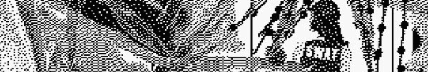

üëπ ARTSTUFF.WTF

FRI 4/14
Hell In A Handbag: 6 Year Anniversary
(the) Handbag Factory
doors 6pm / performances start 7pm (FRIDAY AND SATURDAY)
$5 - 10 suggested donation
This Friday and Saturday (the) Handbag Factory invites you to our anniversary show, celebrating 6 years of diverse performances and art. We would like to extend a massive thank you to the community for all the support and creativity. (Editor's note: Expect synth work, experimental music, artworks, food by Cow Cafe, video and dozens of performers at this great DIY artspace and studio). Partial list of performers: Amps For Christ, Pedestrian Deposit, Tom Hall, Ezra Buchla, Eva Aguila, Bastard Noise. Different performers each evening!
LINK
Stand In The Stream: opening reception
Susanne Vielmetter Los Angeles Projects
5pm - 8pm
FREE
Shot over the course of six years, "Stand in the Stream" was made using multiple video devices—from cell phones to point-and-shoots, spy and POV cams, large format HD and webcams, and real-time screen recordings of live streams, but contains no found footage. As the cameras incessantly watch strangers in public spaces (IRL and online), intimates in the home, and the natural and man-made worlds, the inextricability of a personal life from a politicized being is made clear and inevitable. Varying stakes in participation, distance, and accountability shift in and out of focus as we move from the tangible world to comment feeds, to independent live-streams and back to IRL. While the visual landscape of the computer screen and its vortex of windows is a recurring location, and all interactions are mediated by a lens, Stand in the Stream returns again and again to the body (human, animal, plant, the artist’s), drawing attention to the pleasure and discord of modulating back and forth between screen life and “real” life, and the interstitial spaces where these overlap, both actually and psychologically.
LINK

SAT 4/15
D-CENTERING WHITENESS: A Performance by Thinh Nguyen & Skip Snow
PAM
8:30pm (also held Sunday evening)
$5 - 10 suggested donation
Drawing on the traditions of experimental and political theater, “D-centering Whiteness” is an improvised, scored conversation between artists Thinh Nguyen and Skip Snow. For their residency at PAM, Nguyen and Snow chose to explore “white centrality” as a negotiation of the sometimes painful differences that arise within memory, power and visibility through agreeing to stay in an intimately collaborative process.
LINK
VRLA Afterhours Party
ARQADE
8pm - 2am
$10 before 10/? after
Afterparty for the VRLA convention. Seven Ghosts & Clever Fox present....ARQADE An Immersive Experience. Virtual Reality, Escape Room, Live Musict, Cafe. Music: Compass Ion Dylan w/ the AUX, Ceven Grey, Internetcrush. Art Installations... Dekker Dreyer, Jacob Dudley, Breko, Bribe Nestle Sin, Kay Noire. Live Drawings by Steven. Go-Go Dancers... Lucrezia Grey, Lady Krondor. Brought to you by: ARQADE, Seven Ghosts, Clever Fox, Black Dahlia, JADE.
LINK

SUN 4/16
Jesus Christ Superstar
Echo Park Film Center
8pm
FREE
Join us on Easter Sunday for a special holiday screening of Jesus Christ Superstar, Norman Jewison’s beautiful and bonkers 1973 adaptation of the classic rock opera. Shot entirely on location in Israel, it tells the story of JC’s last days through the lens of his troubled apostle, Judas Iscariot, and features some of the best and catchiest music ever to hit Broadway. Bring some snacks to share and revel in this magical blend of the sacred, the secular, and some of the finest leotards and biggest hair the 1970s has to offer!
LINK

ABOUT
ARTSTUFF.WTF is a minimal website listing page for selected mostly DIY art (and etc) events going on around Los Angeles. It is a personal list of 4 - 6 events sent out to friends weekly, and made available online here for bookmarking and quick reference. There is an archive of past listings. Sign up to receive weekly emails. Made by Lee Tusman.